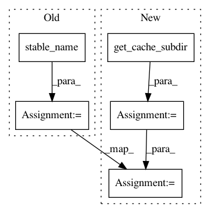

0bbe913f1c67f298b3191ed51498b20144536888,tests/python/pants_test/backend/jvm/tasks/jvm_compile/java/test_java_compile_integration.py,JavaCompileIntegrationTest,test_java_compile_with_different_resolved_jars_produce_different_artifacts,#JavaCompileIntegrationTest#,146
Before Change
with self.temporary_workdir() as workdir, temporary_dir() as cache_dir:
path_prefix = "testprojects/src/java/org/pantsbuild/testproject/jarversionincompatibility"
dotted_path = path_prefix.replace(os.path.sep, ".")
artifact_dir = os.path.join(cache_dir, ZincCompile.stable_name(),
"{}.jarversionincompatibility".format(dotted_path))
config = {
"cache.compile.zinc": {
"write_to": [cache_dir],
"read_from": [cache_dir],
After Change
"compile",
"{}:only-15-directly".format(path_prefix),
], workdir, config))
guava_15_base_dir = self.get_cache_subdir(cache_dir)
guava_15_artifact_dir = os.path.join(
guava_15_base_dir,
"{}.jarversionincompatibility".format(dotted_path),
)
// One artifact for guava 15
self.assertEqual(len(os.listdir(guava_15_artifact_dir)), 1)
In pattern: SUPERPATTERN
Frequency: 4
Non-data size: 5
Instances
Project Name: pantsbuild/pants
Commit Name: 0bbe913f1c67f298b3191ed51498b20144536888
Time: 2017-12-19
Author: 1305167+cosmicexplorer@users.noreply.github.com
File Name: tests/python/pants_test/backend/jvm/tasks/jvm_compile/java/test_java_compile_integration.py
Class Name: JavaCompileIntegrationTest
Method Name: test_java_compile_with_different_resolved_jars_produce_different_artifacts
Project Name: pantsbuild/pants
Commit Name: 0bbe913f1c67f298b3191ed51498b20144536888
Time: 2017-12-19
Author: 1305167+cosmicexplorer@users.noreply.github.com
File Name: tests/python/pants_test/backend/jvm/tasks/jvm_compile/java/test_java_compile_integration.py
Class Name: JavaCompileIntegrationTest
Method Name: test_java_compile_produces_different_artifact_depending_on_java_version
Project Name: pantsbuild/pants
Commit Name: 0bbe913f1c67f298b3191ed51498b20144536888
Time: 2017-12-19
Author: 1305167+cosmicexplorer@users.noreply.github.com
File Name: tests/python/pants_test/backend/jvm/tasks/jvm_compile/java/test_cache_compile_integration.py
Class Name: CacheCompileIntegrationTest
Method Name: _do_test_caching
Project Name: pantsbuild/pants
Commit Name: 0bbe913f1c67f298b3191ed51498b20144536888
Time: 2017-12-19
Author: 1305167+cosmicexplorer@users.noreply.github.com
File Name: tests/python/pants_test/backend/jvm/tasks/jvm_compile/java/test_java_compile_integration.py
Class Name: JavaCompileIntegrationTest
Method Name: test_java_compile_reads_resource_mapping